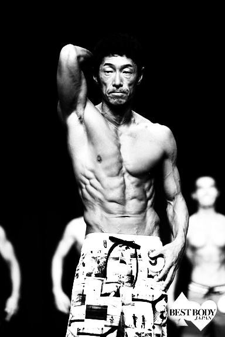

AI Development
生成AI、社内FAQ、AIチャットボット、画像認識、音声認識、RAG、業務特化AIの開発。
AI DEVELOPMENT COMPANY
Peco&Kbは、AI開発・業務システム開発・自社プロダクト開発を通じて、 企業の業務改善と意思決定を支えるテクノロジーカンパニーです。
顔認証 / GPS / シフト / 打刻
WHAT WE BUILD
生成AI、社内FAQ、AIチャットボット、画像認識、音声認識、RAG、業務特化AIの開発。
Webシステム、LINE連携、API連携、業務自動化、既存業務のデジタル化。
AI出退勤管理システムをはじめ、現場で使われる自社プロダクトを開発。
OWN PRODUCT
稼働中
カメラとスマートフォンを活用し、打刻・シフト・GPS・顔認証を統合。 現場の勤怠管理を、より正確に、より自然にします。
TECHNOLOGY
建築図面や規定をRAG技術で解析し、必要書類の自動生成を支援。
画像・映像から姿勢、対象物、個人識別などを推定するAIロジックを開発。
認識、採点、暗黙知のモデル化により、人の作業をAIで補助。
生成AIを活用し、クリエイティブ制作の速度と品質を高める仕組みを構築。
LEADERSHIP

代表取締役 / Business & Field
海外、漁業、飲食、身体づくり、建設業。多様な現場を経験してきた視点から、事業に根づくAI活用を構想します。
現場を知るからこそ、使われ続ける仕組みをつくる。
CTO / AI Engineer
知的好奇心は世界の解像度を上げる
COMPANY
CONTACT
AI導入、業務システム開発、自社プロダクト連携のご相談を承ります。
Contact Peco&Kb